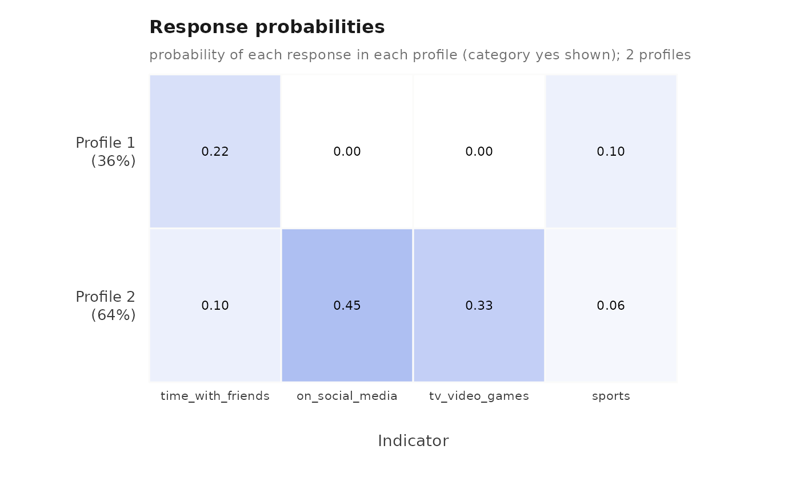

Fits a single-level latent class model: each observation belongs to one of
n_classes unobserved classes, and within a class the categorical
indicators are independent, each with its own response probabilities. It
is the model multilca() fits with id = NULL, and it returns the same
object, so every accessor, plot and inference verb of the package applies
to it. In the results the classes are labelled profile_1, profile_2,
and so on, as throughout the package.
Arguments
- data
A data frame with one row per observation.
- vars
Names of the categorical indicator columns. Their categories are taken from the data; no recoding is needed.
- n_classes
Number of classes, a positive whole number.
- ...
Further arguments for
multilca(), such asmissing,n_starts,seed,min_probabilityandprofile_covariates, exceptidandn_group_classes, which a single-level model does not have.
Value
A fitted multilpa object, as multilca() returns.
Details
For observations nested in groups, use multilca() with the grouping
column as id, which adds latent classes of groups above the classes of
observations.
Conditions
latents_bad_argument when id or n_group_classes is passed; the
conditions multilca() raises otherwise.
See also
lpa() for continuous indicators; multilca() for the
two-level model; enumerate_lca() to compare numbers of classes.
Examples
fit <- lca(student_esm, c("time_with_friends", "on_social_media",
"tv_video_games", "sports"),
n_classes = 2, n_starts = 3, seed = 1)
fit
#> Latent class analysis: 2 classes
#> 2582 observations; 4 categorical indicators
#> Classes are labelled profile_1, profile_2, ... in every table.
#> Log likelihood: -4560.238322 | AIC: 9138.477 | BIC: 9191.184
#> Converged: TRUE | iterations: 96 | best start: 3/3
#>
#> profile indicator category probability threshold
#> 1 time_with_friends no 7.817818e-01 1.2760803
#> 2 time_with_friends no 8.974465e-01 2.1691692
#> 1 time_with_friends yes 2.182182e-01 NA
#> 2 time_with_friends yes 1.025535e-01 NA
#> 1 on_social_media no 9.999994e-01 14.3945349
#> 2 on_social_media no 5.522218e-01 0.2096518
#> 1 on_social_media yes 5.604446e-07 NA
#> 2 on_social_media yes 4.477782e-01 NA
#> 1 tv_video_games no 9.998450e-01 8.7716985
#> 2 tv_video_games no 6.701119e-01 0.7086911
#> 1 tv_video_games yes 1.550360e-04 NA
#> 2 tv_video_games yes 3.298881e-01 NA
#> 1 sports no 9.021328e-01 2.2211497
#> 2 sports no 9.428194e-01 2.8026606
#> 1 sports yes 9.786725e-02 NA
#> 2 sports yes 5.718057e-02 NA
#>
#> Every other table: get_results(x, what = ), or get_results(x, "all").
plot(fit, what = "heatmap")
